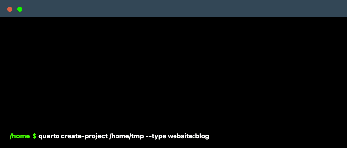

Blogging with Quarto
TL; DR
- 독립 블로깅 툴을 고민하고 있는 당신, Quarto로 오라.
Why
블로깅 툴은 관리가 편한 게 제일 좋다. 다만 상용 툴에는 내 취향에 어긋나는 몇 가지 제약이 있다.
- \(\rm \LaTeX\) 수식의 생성이 쉽지 않다.
- 생각보다 깔끔한 툴이 별로 없다.
- 왠지 모를 종속된 느낌적 느낌
별도의 서버를 호스팅해서 워드프레스 같은 툴을 깔아서 쓸 용기는 부족하니 적당한 선에서 타협이 필요하다. 이 요구를 딱 맞는 것이 github(깃헙)의 스태틱 웹 서비스 Github Pages다. 스테틱 웹이란 html 페이지를 호출한 브라우저에 html을 띄워주는 단순한 서비스를 의미한다. 내가 작성한 포스팅을 html로 생성하는 일관된 방법만 있다면 스태틱이라는 사실 자체가 문제는 아니다. 페이지를 생성하는 약간의 귀찮음이 더해지는 정도라고 보면 될 것이다.
깃헙 페이지스는 스태틱 페이지를 생성하고 관리하는 프레임워크 Jekyll을 품고 있다. 일정한 구조에 맞춰서 콘텐츠를 떨구면 알아서 블로그를 생성한다. 경우에 따라서는 생각보다 편리한 기능이다.
Tools
History of lostineconomics.com
스태틱 웹을 이용할 수 있게 해주는 도구는 대체로 다른 도구에 종속되어 있었다. 이 블로그의 최초 버전은 RStudio에서 제공하는 Blogdown이라는 도구를 활용했다. 작동하는 방식은 여느 스태틱 웹을 생성하는 툴과 비슷하다. 사용하기에 부족함이 없지만, RStudio에 종속되어 있다는 것이 내내 마음에 들지 않았다.
두번째 버전에서는 ’꼼수’를 써 봤다. 깃헙의 각 리포지토리(리포) 별로 html 호스팅이 가능하다는 점에 착안했다. 포스팅 별로 각각 리포를 두고 html을 생성한다. 이 html의 링크를 모아 블로그의 홈을 만들었다. 개별 포스팅을 용도에 맞게 특화할 수 있다는 장점이 있었지만, 별도의 깃헙 리포로 된 구조 때문에 포스팅이 늘어가면서 관리가 번거로워졌다.
세번째 버전은 fastpages를 활용했다. fastpages는 깃헙 액션스의 빌드 기능을 활용한다. 사용자는 .md로 콘텐츠를 전달하고 나머지 빌드는 모두 깃헙 위에서 이루어진다. 별도의 로컬 프로세스가 없다는 점에서 편리한 접근이다. 하지만 디자인의 요소가 많이 아쉽고, 시간이 흐를 수록 프로젝트의 지원이 부족해지는 점이 불안했다.
fastpages 활용은 여기를 참고하자.
Quarto
이 프로젝트의 홈에 따르면 Quarto는 ’과학 문서(scientific document)’의 작성을 위해 고안된 의존성을 최소화한 도구다. 앞서 소개한 BlogDown과 같은 툴이 RStudio와 같은 특정 도구에 의존한다면 이 녀석은 Jupyter, VS Code, RStudio 및 여느 범용 에디터와도 함께 쓸 수 있다.
Quarto는 사절지를 의미한다. 책을 조판할 때 큰 종이에 인쇄해서 네번 접어 조판하는 방식을 뜻한다.
Quarto 프로젝트는 아직 초기지만 상당한 기대와 지지를 받고 있다. 이 프로젝트의 장점은 아래와 같다.
- 마크 다운 기반의 문서 작성, 스태틱 웹 도구 그리고 계산 기반 문서 작성 도구의 기능을 부족하지 않게 두루 갖추고 있다.
- 각종 기능에 관한 문서화가 체계적으로 잘 되어 있다.
- CLI 기반이라서 도구 의존성이 낮다.
프로젝트가 초기여서 안정성이 떨어지는 경우가 있고, 아직 쓰는 사람이 많지 않아 구글링을 통해 필요한 정보를 충분히 얻기 힘든 경우가 있다. 이러한 불편함은 시간이 흐르면 빠르게 해결될 것으로 생각한다. 아울러 Quarto가 머지 않아 Jekyll과 같이 github의 기본 빌드 옵션이 되기를 바라보자.
Application
이제 Quarto를 이용해 기존 fastpages 기반 블로그를 대체해보자. 기존 블로그 포스팅은 어떻게 가져올 수 있을까? 포스팅의 양이 많지 않을 경우 반복 작업을 해도 되고, 필요하면 간단한 스크립트를 통해서 일괄해서 바꿀 수 있다.
Github 리포 생성
깃헙 페이지스를 활용할 깃헙 리포를 생성하자. 그리고 이 녀석을 로컬로 클론해두면 준비가 끝난다. 아래의 사항을 주의하자.
- 리포의 종류는 private이 아닌 public이어야 한다. 그래야 블로그가 서빙된다.
- 깃헙 페이지스 기능을 활성화 해두자.
블로그 페이지 생성
먼저 전체적인 블로그의 구조를 생성해야 한다. 터미날에서 아래와 같이 입력하자.
$ quarto create-project {YOUR-BLOG-DIR} --type website:blogYOUR-BLOG-DIR 은 앞서 지정한 깃허브 리포의 디렉토리에 해당한다. 생성하고자 하는 디렉토리 안에 있다면 생략해도 된다. 이 명령을 실행하면 해당 디렉토리에 블로그를 서비스하기 위해 필요한 파일들이 생성된다. /home/tmp/ 디렉토리 아래 블로그의 뼈대를 생성한다면 아래와 같이 실행된다.

작업 순서상 깃허브와 연동된 리포를 먼저 만들고 그 디렉토리 안에 quarto 프로젝트를 생성하는 것이 자연스럽다.
생성된 파일, 디렉토리 중에서 중요한 내용을 간단히 짚어보자.
| File | Desc |
|---|---|
| _quarto.yml | 블로그 설정 yml |
| index.qmd | index.html 설정 |
| about.qmd | about 페이지 내용 |
| posts/ | 포스팅이 담길 디렉토리 |
| styles.css | 개별 스타일 css |
posts 디렉토리에 .qmd 확장자를 지닌 포스팅 파일을 넣는다. 나머지 파일들에 관한 설명은 공식 문서에 잘 되어 있다.
_quarto.yml은 기본 설정된 항목을 필요에 따라서 고쳐도 충분하다. 보다 많은 설정이 필요하다면 여기 내용을 참고하자.- 나머지 설정은 위 표에 링크된 내용을 참고하면 된다.
렌더링
- 페이지 준비와 설정이 잘 되었으면 렌더링을 하면 된다.
$ quarto render
$ quarto preview render 명령어는 페이지를 렌더링하고 preview는 페이지를 미리 보여준다.
VS Code의 Quarto extension을 쓰면 해당 과정을 편리하게 진행할 수 있다. VS 코드와 쓰면 좋은 이유가 하나 더 있다. 터미널에서 위 명령을 실행하면 페이지 전체를 전부 생성한다. VS 코드에서 쓰면 수정한 페이지의 내용만 골라서 생성한다.
다시 강조한다. Quarto는 스태틱 웹에 기반한 도구다. 새로운 포스팅을 포함하여 새로운 변경 사항이 로컬에서 발생했다면, 이를 render한 후 이 녀석을 깃헙 리포에 동기화 해야 최종적으로 웹 블로그에 반영된다. 렌더링을 잊지 말자.
Customization
styles.css
앞서 언급했듯이 _quarto.yml에서 별도의 .css 파일을 설정할 수 있다. 취향에 따라서 원하는 만큼 커스터마이즈를 할 수 있다. 내 경우는 아래 두 가지 요소를 조정했다.
- 한글의 경우 기본 폰트 이외 추가 폰트를 쓰고 싶을 때
- 각 구성 요소별로 크기를 조정하고 싶을 때
/* css styles */
@import url('https://cdn.jsdelivr.net/gh/orioncactus/pretendard/dist/web/static/pretendard.css');
@import url('https://cdn.rawgit.com/moonspam/NanumSquare/master/nanumsquare.css');
@import url("https://cdn.jsdelivr.net/gh/wan2land/d2coding/d2coding-ligature-subset.css");
h1, h2, h3, h4, h5, h6 {
font-family: 'NanumSquare' !important;
font-weight : 600;
}
h1 {
font-size: 155%
}
h2 {
font-size: 135%
}
h3 {
font-size: 115%
}
h4, h5, h6 {
font-size: 100%
}
ul, li, ol{
font-family: 'pretendard' !important;
font-size: 100%;
}
p {
font-family: 'pretendard' !important;
font-size: 95%;
font-weight: 400;
}
.category {
font-size: 90%;
}
.sourceCode {
font-family: 'D2Coding', monospace !important;
font-size: 95%;
}@import...| 폰트를 로딩한다. 이 블로그에는 프리텐다드, 나눔스퀘어, D3코딩 글꼴이 활용되었다.
- 나머지는 디자인 관련 설정이다. 아주 간단한 css 설정으로 잘 보면 의미를 하는 데에는 큰 어려움이 없을 것이다.
디렉토리 관리
posts/ 내 별도의 디렉토리를 만들어 포스팅을 구별할 수도 있다. 다만, 포스팅 .qmd을 작성할 때 별도의 .html을 삽입했다면, 해당 .html을 각 디렉토리마다 넣어줘야 한다. 예를 들어 google analytics의 html을 포함시켰다면 해당 파일을 각 디렉토리 별로 넣어주자.
기타
원본에서 조금 더 손 본 부분은 이 블로그의 깃헙 리포 anarinsk/lostineconomics_quarto에서 직접 확인하기를 바란다.